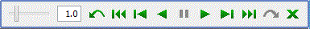

SRec permite al usuario conocer datos acerca de las visualizaciones que crea, y da para ello diferentes herramientas.
La vista del árbol de activación ofrece un menú contextual que nos permite conocer información adicional sobre el nodo sobre el que hemos pinchado con el botón derecho. Además, tendremos una serie de opciones de acción disponibles sobre ese nodo. La información, accesible también desde la opción Información / Información sobre nodo activo, permite ver a qué método representa dicho nodo, qué parámetros completos tuvo, cuántos nodos hijo tiene, en qué estado se encuentra, etc.
Haciendo un click con el botón izquierdo también accederemos a información básica sobre el nodo.
Para acceder a información básica sobre la visualización (número de nodos totales, nodos recorridos, nodos ocultos, etc.) podemos seleccionar la opción Información / Información de la animación.
|
SRec también da la posibilidad de buscar llamadas iguales. Los criterios de búsqueda son: - Método - Valor de parámetro (entrada) - Valor de parámetro (salida) o de retorno Esta funcionalidad permite observar más fácilmente la redundancia que habitualmente existe en los algoritmos recursivos. |
 |
__________